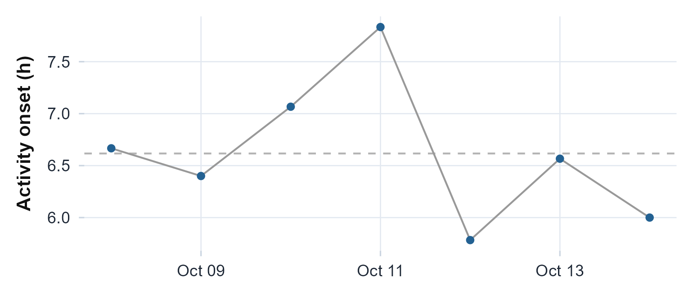

Phase, regularity, and social jet lag
Source:vignettes/articles/phase-regularity.Rmd
phase-regularity.RmdThe idea, and a rule to remember
The metrics in this article are about when the rhythm happens and how consistently it repeats, rather than how strong or how fragmented it is. The Sleep Regularity Index asks whether you are asleep and awake at the same clock times from one day to the next; activity onset and offset, the composite phase deviation, and the phase-concentration tests pin down the timing of a daily marker and how tightly it clusters; social jet lag measures the gap between your work-day and free-day timing: the clock you keep for work versus the one your body would choose.
The rule to carry through this article: regularity is consistency of timing, not quality of sleep. The Sleep Regularity Index rewards a pattern that repeats at the same clock time, so a person who is reliably awake all night every night scores as perfectly regular. Read these timing metrics alongside a measure of how much sleep there is, never as a stand-in for it.
The math
Write the recording as a binary sleep/wake matrix , where indexes the epochs of a day (clock-time bins) and indexes the calendar days. The Sleep Regularity Index is the chance two consecutive days hold the same state at the same clock time, rescaled to (Phillips et al., 2017):
Perfect repetition scores , independent (coin-flip) days score about , and a perfectly inverted pattern scores .
Social jet lag compares the mid-point of sleep on free days (MSF) with that on work days (MSW) (Wittmann et al., 2006):
Because free-day sleep is often longer (catch-up sleep), the chronotype is read from the sleep-debt-corrected mid-sleep MSFsc, which shifts the free-day mid-point back by half the excess of free-day sleep over the weekly average (Roenneberg et al., 2003; Roenneberg et al., 2012):
For the phase-concentration tests, write each day’s marker as an angle . The mean resultant length measures clustering, and the Rayleigh statistic tests it against uniformity (Fisher, 1993). The composite phase deviation combines each day’s precision (deviation from the person’s own mean phase) and accuracy (deviation from a reference) as (Fischer et al., 2016).
Assumptions, and when they break
-
A scored sleep/wake state. The SRI needs a
per-epoch label, not raw counts. Build it from an activity scorer
(
sleep.cole.kripke()below); a different scorer or threshold can move the index. - Clock-time alignment, not elapsed time. Epochs are binned by real clock time, so a recording that does not start at midnight is handled correctly, but a device whose clock is wrong will mistime every day.
-
Enough whole days. The SRI is a
between-consecutive-day quantity and the concentration tests are
circular statistics; one or two days give an unstable answer.
sri.matrix()reports how many consecutive-day pairs it actually used. -
Missing data lowers power, not bias. Non-wear
epochs scored
NAare skipped from the concordance count rather than read as sleep, but a recording that is mostly gaps leaves little to compare.
Recovering known truth
Before trusting the SRI on real data, watch it behave on data whose answer we know. We build three seven-day recordings and score each with the same Cole-Kripke scorer: one with the same 23:00-07:00 sleep window every night, one whose sleep onset wanders a few hours from day to day, and one where every epoch is independently quiet or active. The SRI should fall from near toward across the three.
ts <- seq(as.POSIXct("2024-01-01 00:00:00", tz = "UTC"), by = 60, length.out = 7 * 1440)
tod <- as.POSIXlt(ts)$hour + as.POSIXlt(ts)$min / 60
day <- as.integer(as.Date(ts) - as.Date(ts[1]))
set.seed(1)
# regular: the same nightly window; jittered: onset wanders; random: coin-flip epochs
regular_counts <- ifelse(tod >= 23 | tod < 7, rpois(length(ts), 2), rpois(length(ts), 250))
onset <- (23 + round(rnorm(7, 0, 3)))[day + 1]
jittered_counts <- ifelse((tod - onset) %% 24 < 8, rpois(length(ts), 2), rpois(length(ts), 250))
random_counts <- ifelse(rbinom(length(ts), 1, 0.5) == 1, rpois(length(ts), 2), rpois(length(ts), 250))
sri_of <- function(counts) {
state <- sleep.cole.kripke(counts)
sleep.regularity.index(state, ts)
}
knitr::kable(
data.frame(pattern = c("regular", "jittered", "random"),
SRI = c(sri_of(regular_counts), sri_of(jittered_counts), sri_of(random_counts))),
digits = 2,
caption = "The SRI falls from its ceiling as a planted sleep pattern is made irregular, then random."
)| pattern | SRI |
|---|---|
| regular | 100.00 |
| jittered | 17.15 |
| random | 6.13 |
A sleep pattern that repeats at the same clock time returns the SRI at its ceiling of ; day-to-day jitter in the onset pulls it down sharply; coin-flip epochs leave it near . The index reports exactly the regularity we put in.
On a real recording
The recording bundled with the package runs the same way. We score it to a per-epoch sleep/wake state, then read the SRI off the published epoch-by-day matrix.
agd <- agd.counts(read.agd(example_agd(1), verbose = FALSE))
state <- sleep.cole.kripke(agd$axis1)
sri.matrix(state, agd$timestamp)
#> $SRI
#> [1] 58.46
#>
#> $n_days
#> [1] 8
#>
#> $n_valid_pairs
#> [1] 8479
#>
#> $method
#> [1] "phillips_matrix"sleep.regularity.index() is the same number with a
lighter return: it calls sri.matrix() internally, so the
two always agree.
sleep.regularity.index(state, agd$timestamp)
#> [1] 58.46The phase markers run on the raw counts.
activity.onset.offset() finds, on the averaged day, the
clock time where activity rises most sharply (onset) and falls most
sharply (offset) by the relative-difference method (Roenneberg et al.,
2003).
activity.onset.offset(agd$axis1, agd$timestamp)
#> Activity Onset / Offset
#>
#> Activity onset: 06.67 h
#> Activity offset: 23.82 hReading the numbers
- SRI runs to . Above about is a highly regular sleeper; the population mid-range sits near -; below about is markedly irregular. Here it is mid-range: the sleep/wake pattern repeats moderately well from day to day. Remember the rule: a high SRI says consistent, not healthy.
- Activity onset / offset are clock hours and are circular: an onset of 23.8 and one of 0.2 are half an hour apart, not 23. Read them as the times the active day begins and ends.
- Mid-sleep (MSW, MSF, MSFsc) are clock times of the sleep mid-point; the corrected MSFsc is the chronotype you would compare across people.
The wider phase-and-regularity family
The same timing idea generates a family of related descriptors.
The gap between work and free days.
social.jet.lag() needs a small table of sleep periods with
in_bed_time and out_bed_time. We build a
synthetic week: five work nights to bed at 23:00 up at 07:00, two free
nights to bed at 01:00 up at 10:00, later and longer, as free days
usually are.
dates <- as.Date("2024-01-01") + 0:6
free <- weekdays(dates) %in% c("Saturday", "Sunday")
sleep_periods <- data.frame(
in_bed_time = as.POSIXct(ifelse(free, paste(dates + 1, "01:00:00"),
paste(dates, "23:00:00")), tz = "UTC"),
out_bed_time = as.POSIXct(ifelse(free, paste(dates + 1, "10:00:00"),
paste(dates + 1, "07:00:00")), tz = "UTC")
)
sjl <- social.jet.lag(sleep_periods, work_days = !free)
c(MSW = sjl$MSW_time, MSF = sjl$MSF_time, MSFsc = sjl$MSFsc_time,
SJL_hours = sjl$social_jet_lag_hours, SJLsc_hours = sjl$social_jet_lag_sc_hours)
#> MSW MSF MSFsc SJL_hours SJLsc_hours
#> "03:00" "05:30" "05:09" "2.5" "2.14"The free-day mid-sleep falls 2.5 hours later than the work-day one (the social jet lag), and the sleep-debt correction trims that to the smaller SJLsc, the part of the shift not explained by weekend catch-up sleep. A value above one hour is the threshold commonly flagged as a health concern (Wittmann et al., 2006).
Do the daily markers cluster? A regular phase lands at the same clock time each day. We take the per-day activity onset and test whether those onsets are concentrated rather than scattered around the clock.
d <- as.Date(agd$timestamp)
onsets <- vapply(split(seq_along(d), d), function(ix) {
if (length(ix) < 600) return(NA_real_) # skip part-days
activity.onset.offset(agd$axis1[ix], agd$timestamp[ix])$onset_h
}, numeric(1))
onsets <- onsets[!is.na(onsets)]
round(onsets, 2)
#> 2025-10-08 2025-10-09 2025-10-10 2025-10-11 2025-10-12 2025-10-13 2025-10-14
#> 6.67 6.40 7.07 7.83 5.78 6.57 6.00phase.concentration() reports the mean resultant length
and the Rayleigh and Hermans-Rasson tests of uniformity (Fisher, 1993; Landler et al., 2019); a small
p-value is evidence the onsets cluster at a preferred time.
phase.concentration(onsets)
#> Phase Concentration Tests
#>
#> n days: 7
#> Mean direction: 06.61 h R: 0.986
#> Rayleigh: Z = 6.81, p = 0.0000
#> Hermans-Rasson: T = 34.4, p = 0.0005
df <- data.frame(date = as.Date(names(onsets)), onset = onsets)
ggplot(df, aes(date, onset)) +
geom_hline(yintercept = mean(onsets), colour = "grey70", linetype = 2) +
geom_line(colour = "grey60") + geom_point(colour = "#236192", size = 2) +
labs(x = NULL, y = "Activity onset (h)") +
theme_actiRhythm()
The activity onset for each day. Tightly stacked points are a concentrated phase; the mean resultant length and Rayleigh test quantify that clustering.
How far the phase strays.
composite.phase.deviation() summarises the same onsets as a
single instability score: the precision (scatter around the person’s own
mean phase) and accuracy (distance from a reference) combined day by day
(Fischer et al.,
2016).
composite.phase.deviation(onsets)
#> $CPD
#> [1] 0.693
#>
#> $precision
#> [1] 0.49
#>
#> $accuracy
#> [1] 0.49
#>
#> $reference_phase
#> [1] 6.615
#>
#> $n_days
#> [1] 7Uncertainty in the mean phase.
circadian.onset.ci() gives a bootstrap confidence interval
for the mean onset time, resampling the per-day onsets on the circle so
the interval is correct even near midnight.
circadian.onset.ci(onsets)
#> $mean_onset
#> [1] 6.615
#>
#> $ci_lower
#> [1] 6.177
#>
#> $ci_upper
#> [1] 7.133
#>
#> $n_days
#> [1] 7Limitations
- The SRI depends on the scorer. It is computed on a sleep/wake label, so a different scoring algorithm or threshold shifts it; report which scorer you used.
- Regularity is not adequacy. A perfectly regular short or mistimed sleeper still scores high. Pair the SRI with a sleep-duration or amplitude metric.
-
Social jet lag needs both kinds of day. With no
free nights (or no work nights) MSF or MSW is undefined and the
difference is
NA; a single free night gives an unstable free-day mid-point. -
Circular statistics need several days. The
concentration tests, the CPD, and the onset confidence interval all
return
NAbelow three days and are noisy with only a handful.
Reference and validation
The Sleep Regularity Index follows Phillips et al. (2017) in its full epoch-by-day concordance form; social jet lag and the sleep-debt correction follow Wittmann et al. (2006) and (2003; Roenneberg et al.; 2012). The phase markers use the relative-difference onset of Roenneberg et al. (2003), the composite phase deviation of Fischer et al. (2016), and the circular tests of Fisher (1993) and Landler et al. (2019). actiRhythm’s SRI and phase metrics are cross-checked against their reference definitions in the Validation article and the package’s test suite.